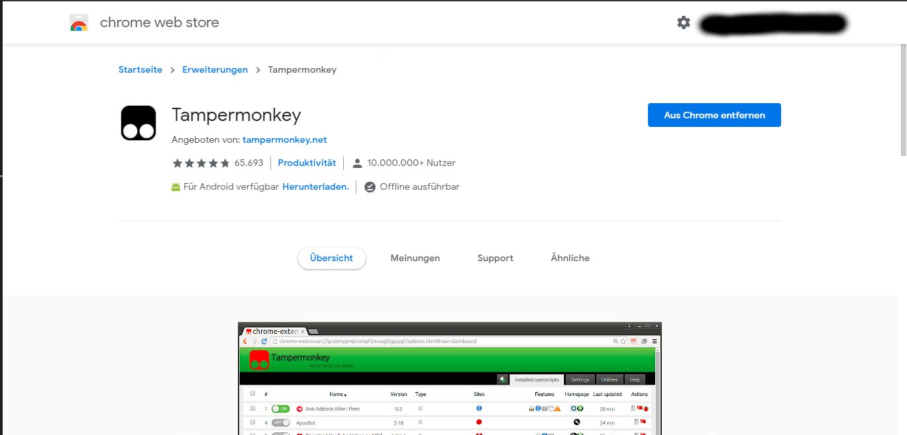
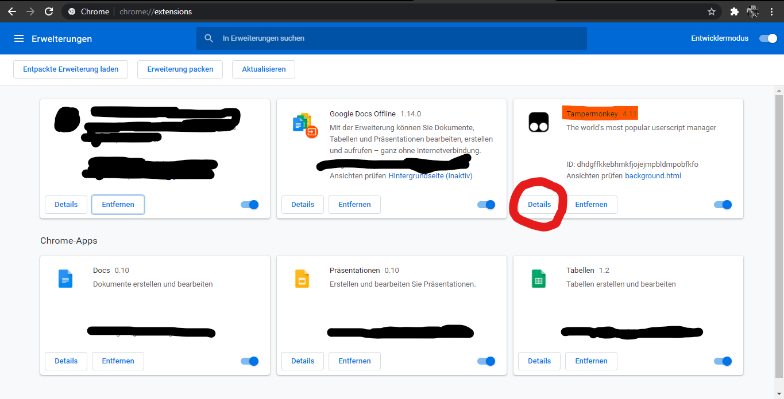
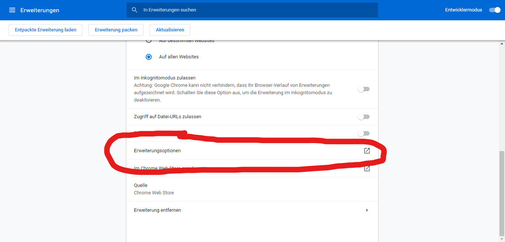
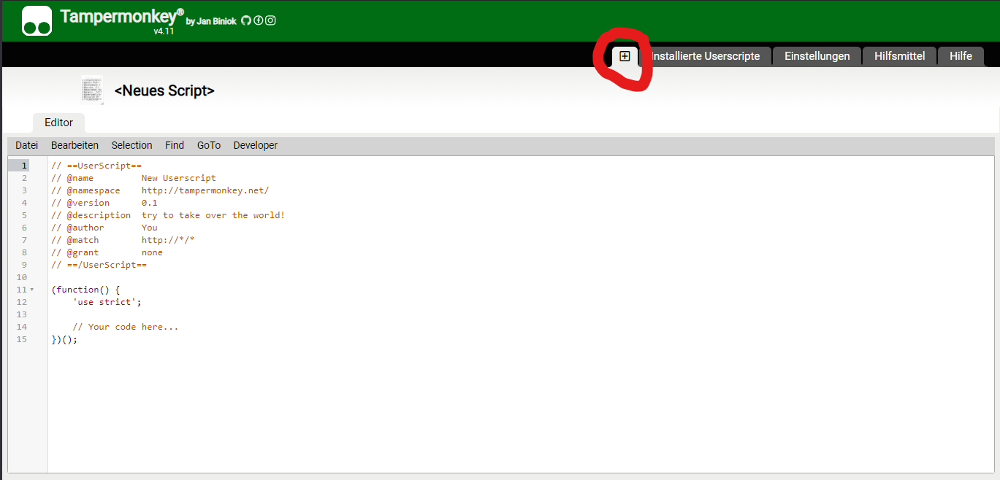
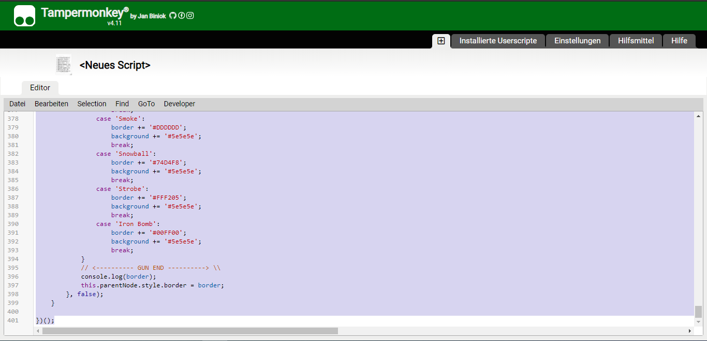
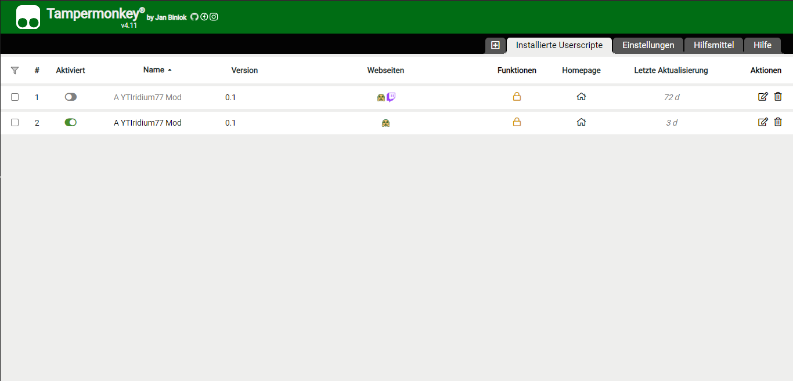

Tutorial: How to use our mod.
Content
- 1. The right Browser
- 2. Tampermonkey (Google Chrome)
1. The right Browser
If you play surviv.io via steam, there is no way to use this mod. I personally use Google Chrome to use the mod and play surviv.io. Here are some more possible browsers listed:
2. Tampermonkey (Google Chrome)
Tampermonkey is a chrome extension that allows a user to use their own scripts. Since my mod is such a script it needs this
To add this extension click on this link: LINK
After this step you write "chrome://extensions" into your browser and click on the button circled below.
Scroll down and click the button circled below.
Now press the + symbol circled below.
Delete all text from the page. And drag and drop the downloaded file into the page. This should look like this.
Press "strg" + "s" to save the script. Now it should looks like this:
After you finished open surviv.io klick the menü button and choose you custom background!
For getting the newest update about this Mod join this Discord Server.